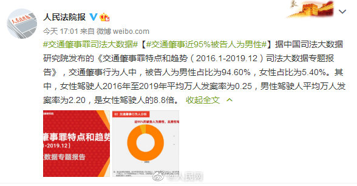
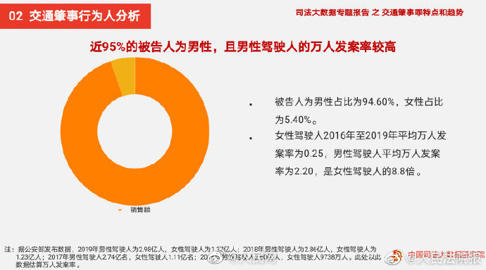

这个数据要一再重复。//@尉迟燕窝: 万人发案率的意思是，一万个男性司机和一万个女性司机比，前者发案率是后者8.8倍。那么无论是安全教育，还是媒体宣传上，都是更有必要对男性司机多加提示的，对不对？
@人民网:
【#交通肇事男性万人发案率为女性8.8倍#】据@人民法院报 消息，据中国司法大数据研究院发布的《交通肇事罪特点和趋势（2016.1-2019.12）司法大数据专题报告》，交通肇事行为人中，被告人为男性占比为94.60%，女性占比为5.40%。其中，女性驾驶人2016年至2019年平均万人发案率为0.25，男性驾驶人平均万人发案率为2.20，是女性驾驶人的8.8倍。
- 
- 